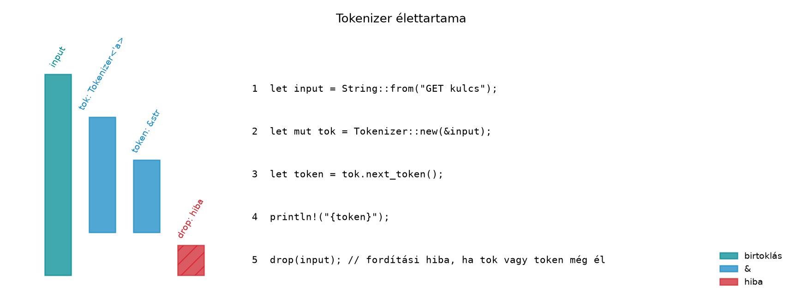

C++-ban gyakori, hogy egy osztály referenciát vagy nézetet tárol,
például std::string_view taggal, hogy elkerülje a
felesleges másolást. Ez a minta viszont a programozóra bízza az
élettartam-kezelést: ha a hivatkozott std::string hamarabb
felszabadul, a nézet érvénytelenné válik, és a hiba csak futásidőben,
gyakran nehezen reprodukálható módon jelentkezik. A Rust ebben a
helyzetben is a fordítóra bízza az ellenőrzést: ha egy struktúra
referenciát tartalmaz, a struktúra típusában explicit
élettartam-paraméterrel kell rögzíteni a kapcsolatot. Ebben az
alfejezetben azt vizsgáljuk, hogyan tárolunk referenciát struktúrában,
mit jelent a 'static, és milyen tervezési döntéseket
hozzunk birtokolt és kölcsönzött adatok között.
Definíció. Élettartam-paraméteres
struktúra: olyan struct, amely legalább egy referencia
típusú mezőt tartalmaz. A struct deklarációjában fel kell
venni egy élettartam-paramétert, és a referencia típusában használni
kell:
struct Parser<'a> {
input: &'a str,
}Az 'a itt nem egy konkrét, ismert élettartam, hanem egy
paraméter, amely a Parser példányosításakor
kötődik ahhoz az élettartamhoz, ameddig a kölcsönzött input
érvényes. Ugyanezt az élettartamot az impl blokkon is fel
kell tüntetni:
impl<'a> Parser<'a> {
fn new(input: &'a str) -> Self {
Self { input }
}
}Szabály. A struktúra élettartama nem haladhatja meg a benne tárolt referenciák élettartamát; a borrow checker ezt a struktúra típusában szereplő élettartam-paraméter segítségével ellenőrzi. Ha a struktúrát olyan helyen hozod létre, ahol a kölcsönzött adat már nem él elég sokáig, a kód nem fordul le.
Definíció. A 'static élettartam a
teljes program futásidejére érvényes élettartam. Két gyakori jelentését
különböztessük meg:
&'static str: olyan referencia, amely a program
teljes élettartama alatt érvényes, például a forráskódba írt
string-literalek ("hello").T: 'static korlát: azt jelenti, hogy a T
típus nem tartalmaz nem-'static referenciákat,
tehát minden benne tárolt referencia 'static élettartamú,
vagy a típus teljesen birtokolja az adatait. Fontos: ez
nem azt jelenti, hogy az adott érték örökké él; egy
String példány átadható T: 'static korlátú
függvénynek, pedig a függvény visszatérése után felszabadul. A korlát
csak a típusban lévő esetleges referenciákra vonatkozik.A T: 'static korlát akkor hasznos, ha egy értéket hosszú
életű háttérszálra vagy aszinkron taskra akarunk átadni; ezt a Send és Sync és a future-ök
alfejezetekben fogjuk használni.
Önhivatkozó struktúrák. Előfordulhat, hogy egy struktúra egyik mezője a másik mezőjére mutat. Rustban ez biztonságos kóddal nem kifejezhető, mert a struktúra mozgatásakor a belső mutató érvénytelenné válna. A klasszikus példa:
// Ez a változat szándékosan nem fordul le:
struct SelfRef<'a> {
data: String,
view: &'a str, // mire mutasson? a data mezőre?
}A stabil megoldás általában az, hogy a nézetet nem tároljuk, hanem
mindig úgy számítjuk ki, vagy birtokolt adatot és indexet használunk. A
haladó Pin-alapú megoldást később, az aszinkron fejezetben
tárgyaljuk, itt csak a problémát említjük.
A következő C++ kód egy std::string_view-t tároló
osztályt mutat:
#include <string>
#include <string_view>
struct Parser {
std::string_view input;
explicit Parser(const std::string& s) : input(s) {}
};
Parser make_parser() {
std::string local = "GET key";
return Parser(local); // veszély: local felszabadul, input függő lesz
}A Rust-megfelelő:
struct Parser<'a> {
input: &'a str,
}
impl<'a> Parser<'a> {
fn new(input: &'a str) -> Self {
Self { input }
}
}
// Ez a függvény szándékosan nem fordul le:
fn make_parser() -> Parser<'_> {
let local = String::from("GET key");
Parser::new(&local) // E0597: `local` does not live long enough
}A különbség: a C++-fordító nem figyelmeztet a függő nézetre, a
Rust-fordító viszont már a make_parser definíciójakor hibát
ad (E0597), mert a visszatérési típus élettartama nem kapcsolható a
lokális String-hez. A hibaüzenet pontos szövege
verziófüggő, a lényege: a kölcsönzött érték nem él elég sokáig.
Munkakönyvtár: ~/rust-labor/rkv/
Az rkv szerver majd soronként kapott szöveges parancsokat dolgoz fel
(GET <kulcs>,
SET <kulcs> <érték>, stb.). Ehhez egy olyan
tokenizálóra van szükség, amely a bemeneti sort nem birtokolja, csak
nézeteket ad vissza. Ez a labor egy Tokenizer<'a>
struktúrát valósít meg az rkv-core crate-ben, amelyet
később a tokiói szerver használ.
Továbbvitt eredmény. Ez a
Tokenizer<'a> típus az
rkv-core/src/tokenizer.rs fájlban jelenik meg, és a Az rkv hálózati szerver: TCP, protokoll, kecses
leállás alfejezetben használjuk fel a beérkező sorok
feldolgozására.
rkv-core/src/tokenizer.rs fájlt:/// Szöveges parancssorokat tokenizáló nézet.
///
/// A `Tokenizer` nem birtokolja a bemenetet, csupán egy `&str`-re
/// mutató nézet. A `next_token` hívások során a belső `rest`
/// mezőt léptetjük a bemenetben.
#[derive(Debug)]
pub struct Tokenizer<'a> {
/// A bemenet fennmaradó része.
rest: &'a str,
}
impl<'a> Tokenizer<'a> {
/// Új tokenizálót hoz létre a megadott bemeneti sorra.
pub fn new(input: &'a str) -> Self {
Self { rest: input }
}
/// Visszaadja a következő, szóközzel elválasztott tokent,
/// vagy `None`-t, ha nincs több.
///
/// A visszaadott token élettartama a bemenet (`'a`) élettartamához
/// kötött, nem a `&mut self` kölcsönzéséhez, így a tokenizáló
/// tovább használható a token független feldolgozása közben is.
pub fn next_token(&mut self) -> Option<&'a str> {
self.rest = self.rest.trim_start();
if self.rest.is_empty() {
return None;
}
let end = self
.rest
.find(char::is_whitespace)
.unwrap_or(self.rest.len());
let token = &self.rest[..end];
self.rest = &self.rest[end..];
Some(token)
}
}rkv-core/src/lib.rs
fájlhoz:pub mod tokenizer;rkv-core/tests/tokenizer.rs fájlba:use rkv_core::tokenizer::Tokenizer;
#[test]
fn tokenizálja_a_parancsot() {
let mut tok = Tokenizer::new("SET kulcs ertek");
assert_eq!(tok.next_token(), Some("SET"));
assert_eq!(tok.next_token(), Some("kulcs"));
assert_eq!(tok.next_token(), Some("ertek"));
assert_eq!(tok.next_token(), None);
}
#[test]
fn kezeli_a_szóközöket() {
let mut tok = Tokenizer::new(" LIST prefix ");
assert_eq!(tok.next_token(), Some("LIST"));
assert_eq!(tok.next_token(), Some("prefix"));
assert_eq!(tok.next_token(), None);
}cargo test -p rkv-coreVárható kimenet: mindkét teszt sikeres, mert a tokenizáló a
trim_start és a find(char::is_whitespace)
segítségével átugorja a vezető szóközöket, és a tokenhatárt az első
szóköznél állapítja meg.
A next_token szignatúrájában fontos az explicit
'a a visszatérési típusban. Ha ezt elhagynánk, az elision
szabály a &mut self élettartamához kötné a visszaadott
referenciát, ami túlságosan szigorú lenne: a token nem maradhatna
használatban, miközben a tokenizálót tovább akarjuk hívni. Az explicit
annotáció megőrzi a bemeneti élettartamot.
Az alábbi ábra egy tokenizáló és a bemeneti String
élettartam-viszonyát mutatja:

A Tokenizer és a belőle kinyert tokenek is a
input élettartamához kötöttek; a drop(input)
akkor hibás, ha a tokenizáló vagy a token még él, mert a kölcsönzött
adat felszabadítása érvénytelen referenciát hagyna.
Amikor struktúrában adatot tárolunk, alapvető tervezési döntés a birtokolt és a kölcsönzött forma közötti választás. A két lehetőség:
// Birtokolt: a struktúra a saját adatát tárolja.
struct OwnedConfig {
name: String,
}
// Kölcsönzött: a struktúra csak nézet a máshol tárolt adatra.
struct BorrowedConfig<'a> {
name: &'a str,
}Birtokolt (String) előnyei: - A
struktúra önállóan, a bemenettől függetlenül élhet; könnyű visszaadni,
eltárolni gyűjteményben, átadni más szálakra. - Nincs
élettartam-paraméter a típusban, így az API egyszerűbb.
Hátránya: - A bemeneti adat másolásával jár, ami nagy adat esetén költséges.
Kölcsönzött (&'a str) előnyei: -
Nincs másolás, gyors, különösen nagy bemeneteknél vagy gyakori
hívásoknál. - A hívó ellenőrzését a borrow checker garantálja, így nincs
dangling pointer.
Hátránya: - A struktúra élettartama a bemenethez kötött, ezért nem tárolható el hosszú időre, és a típusban élettartam-paramétert kell kezelni.
A gyakorlati irányelv: ha a struktúra rövid életű nézet, akkor kölcsönzött; ha hosszú életű, önálló érték, akkor birtokolt. Parser, tokenizáló, konfiguráció-validátor esetén a kölcsönzött forma idiomatikus. Egy szerver kapcsolati állapotát viszont általában birtokolt adattal érdemes tárolni, mert a kapcsolat hosszan él.
Hiányzó élettartam-paraméter a struktúrán. Ha a
struct Parser { input: &str } deklarációt használod, a
fordító E0106 hibát ad: „missing lifetime specifier”. A javítás:
struct Parser<'a> { input: &'a str }.
A 'static félreértése. A
T: 'static korlát nem követeli meg, hogy az érték örökké
éljen. Például a következő kód lefordul:
fn take_static<T: 'static>(_x: T) {}
let s = String::from("hello");
take_static(s); // OK, mert a String birtokol, nincs benne nem-'static referenciaTúl szigorú élettartam a metódus visszatérési
típusában. Ha a next_token szignatúrája
fn next_token(&mut self) -> Option<&str>,
a visszakapott token élettartama a &mut self
kölcsönzéséhez kötődik, nem a bemenetéhez. Ez a különbség akkor okoz
gondot, ha a tokent a tokenizáló további hívása után is használni
szeretnénk. A megoldás az explicit 'a a visszatérési
típusban.
Klónozás mindenhol. A borrow checker hibáit sok
kezdő Rust-fejlesztő azzal kerüli meg, hogy mindenhol
String-et klónoz. Ez felesleges másolást és gyengébb
teljesítményt eredményez. Törekedj a kölcsönzött nézetek használatára,
ahol a struktúra rövid életű.
Vizsgáld meg a következő kódot:
struct View<'a> {
s: &'a str,
}
fn create_view() -> View<'_> {
let text = String::from("data");
View { s: &text }
}Válaszodban indokold, melyik szabály sérül, és mi a hibaüzenet lényege (E0597 vagy hasonló).
Az alábbi C++ tokenizáló std::string_view-t használ:
#include <string_view>
struct Tokenizer {
std::string_view rest;
explicit Tokenizer(std::string_view input) : rest(input) {}
std::string_view next_token() {
while (!rest.empty() && rest.front() == ' ') rest.remove_prefix(1);
if (rest.empty()) return {};
size_t end = 0;
while (end < rest.size() && rest[end] != ' ') ++end;
auto token = rest.substr(0, end);
rest.remove_prefix(end);
return token;
}
};Írd át ezt a Rust Tokenizer<'a>-ra, és magyarázd
el, miért biztonságosabb a Rust-verzió élettartam-kezelése.
Valósítsd meg a laborban bemutatott
Tokenizer<'a>-t az rkv-core crate-ben.
Egészítsd ki egy next_token metódussal, amely a szóközöket
és tabulátorokat is elválasztóként kezeli, és írj hozzá unit teszteket:
üres bemenet, csak szóközök, többszörös szóközök, tabulátorok, valamint
egy GET kulcs parancs tokenizálása. Ellenőrizd a
cargo test -p rkv-core paranccsal.
Az rkv-szerver egy kapcsolatánál a bejövő sorokat egy pufferben
dolgozzuk fel. Tegyük fel, hogy egy Connection struktúrát
tervezel:
String, akkor a parancs-tokenizáló nézeteket
használhat.Connection-t gyakran mozgatják, vagy a
puffert más struktúrákba kell átadni, milyen érvek szólnak a birtokolt
String mellett?Indokold a választásodat a birtokolt vs. kölcsönzött szempontok alapján, és írd le, milyen élettartam-következményei lennének a kölcsönzött megoldásnak.
A kód nem fordul le. A create_view függvény egy lokális
String-re mutató referenciát próbál visszaadni a
View-ban. A text élettartama a függvény
blokkjára korlátozódik, míg a visszatérési View<'_>
élettartama a hívó által elvárt tetszőleges élettartam. A borrow checker
E0597 hibát ad: a kölcsönzött érték nem él elég sokáig. A javítás az
lenne, ha a View birtokolná az adatot (String
mező), vagy a függvény paraméterként kapná a bemenetet.
A Rust-megfelelő a laborban bemutatott
Tokenizer<'a>. A fő különbség: a C++-osztály nem
rögzíti az élettartamot a típusban, és a hívó felelőssége, hogy a
std::string_view mögötti adat éljen. A Rust-struktúra az
<'a> paraméterrel kikényszeríti, hogy a
Tokenizer ne élje túl a bemenetet, és a
next_token visszatérési típusában explicit 'a
jelzi, hogy a token is ugyanahhoz az élettartamhoz kötött.
A megoldás megegyezik a laborban közölt kóddal. A
trim_start alapértelmezetten a Unicode whitespace-t is
kezeli, beleértve a tabulátorokat. A tesztek a következőképpen
egészíthetők ki:
#[test]
fn kezeli_a_tabulátorokat() {
let mut tok = Tokenizer::new("DEL\tkulcs");
assert_eq!(tok.next_token(), Some("DEL"));
assert_eq!(tok.next_token(), Some("kulcs"));
assert_eq!(tok.next_token(), None);
}
#[test]
fn üres_bemenet() {
let mut tok = Tokenizer::new("");
assert_eq!(tok.next_token(), None);
}A Connection puffert célszerű birtokolt
String-ként tárolni, mert a kapcsolat hosszú életű, és a
puffert többször is módosítani, kiüríteni, valamint akár más
struktúráknak átadni szükséges. A kölcsönzött &str
tárolása azt jelentené, hogy a Connection élettartama a
bemeneti adat élettartamához kötött, ami a szerver esetében a socketből
olvasott adatokra nem alkalmazható, mert azok a feldolgozás után
felszabadulnak. A birtokolt puffer mellett az egyes sorokat feldolgozás
előtt Tokenizer::new(&buffer) módon nézetként lehet
tokenizálni, így a tokenizálás gyors, másolásmentes marad.
Ebben az alfejezetben megismerkedtünk az élettartam-paraméteres
struktúrákkal: ha egy struct referenciát tárol, a
típusdeklarációban <'a> paramétert kell használni, és
a referencia típusában jelölni kell. A 'static két
jelentését tisztáztuk: &'static str statikus
referencia, míg T: 'static típuskorlát, amely a típusban
lévő referenciákra vonatkozik, nem az érték élettartamára. Megvizsgáltuk
az önhivatkozó struktúrák problémáját, és a birtokolt versus kölcsönzött
adatok közötti tervezési döntéseket. A laborban létrehoztuk az
rkv-core/src/tokenizer.rs fájlban a
Tokenizer<'a> típust, amely a szöveges parancsokat
&str nézetekkel tokenizálja, és ezt a hálózati szerver használja majd. A
T: 'static korlátot a Send és Sync
és a future-ök alfejezetekben fogjuk alkalmazni.
A legfontosabb szabály: a struktúra élettartama nem haladhatja meg a
benne tárolt referencia élettartamát, és a metódusok visszatérési
típusánál explicit élettartam-annotációval őrizzük meg a bemeneti
élettartamot.
'static és a
struktúrákban tárolt referenciák hátteréhez.rkv-core pontos
crate- és modulneveit a könyv korábbi alfejezetei rögzítik; ezeket a
labor során ellenőrizni kell.